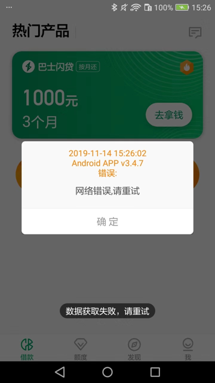
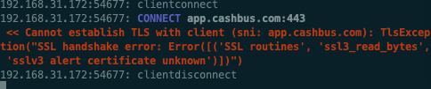

sslv3 alert certificate unknown
mitmdump访问部分url出错：
比如：
某次报错：
192.168.31.177:50670: CONNECT 6ib5h.com:443
<< Cannot establish TLS with client (sni: 6ib5h.com): TlsException("SSL handshake error: Error([('SSL routines', 'ssl3_read_bytes', 'sslv3 alert certificate unknown')])")
和
抓包安卓app现金巴士时：

对应mitmdump的log：
<< Cannot establish TLS with client (sni: app.cashbus.com): TlsException("SSL handshake error: Error([('SSL routines', 'ssl3_read_bytes', 'sslv3 alert certificate unknown')])")

- 原因
app内部做了certificate pinning 证书固定 的技术
app内部给证书做了指纹，只允许来自服务器的证书，匹配后才认为是合法的有效的，否则就拒绝
即拒绝那些指纹不匹配的证书
- 如何解决
- 分2种情况：
- 用
tls_passthrough.py实现部分解决 - 无法解决
- 用
- 分2种情况：
用tls_passthrough.py实现部分解决
借用别人的脚本：
去：
- 要么直接利用：
mitmproxy -s tls_passthrough.py
- 要么整理到自己的脚本中：
mitmdump -p 8081 -s Save1.py
其中：Save1.py
# _*_ coding: utf-8 _*_
import json
import re
import os
import sys
print("sys.executable=%s" % sys.executable)
class Saver:
def __init__(self):
...
def request(self, flow):
curReq = flow.request
url = curReq.url
headers = curReq.headers
print("url=%s, headers=%s" % (url, headers))
# do what you want
# eg: save something to some file
addons = [Saver()]
"""
This inline script allows conditional TLS Interception based
on a user-defined strategy.
Example:
> mitmdump -s tls_passthrough.py
1. curl --proxy http://localhost:8080 https://example.com --insecure
// works - we'll also see the contents in mitmproxy
2. curl --proxy http://localhost:8080 https://example.com --insecure
// still works - we'll also see the contents in mitmproxy
3. curl --proxy http://localhost:8080 https://example.com
// fails with a certificate error, which we will also see in mitmproxy
4. curl --proxy http://localhost:8080 https://example.com
// works again, but mitmproxy does not intercept and we do *not* see the contents
Authors: Maximilian Hils, Matthew Tuusberg
"""
import collections
import random
from enum import Enum
import mitmproxy
from mitmproxy import ctx
from mitmproxy.exceptions import TlsProtocolException
from mitmproxy.proxy.protocol import TlsLayer, RawTCPLayer
class InterceptionResult(Enum):
success = True
failure = False
skipped = None
class _TlsStrategy:
"""
Abstract base class for interception strategies.
"""
def __init__(self):
# A server_address -> interception results mapping
self.history = collections.defaultdict(lambda: collections.deque(maxlen=200))
def should_intercept(self, server_address):
"""
Returns:
True, if we should attempt to intercept the connection.
False, if we want to employ pass-through instead.
"""
raise NotImplementedError()
def record_success(self, server_address):
self.history[server_address].append(InterceptionResult.success)
def record_failure(self, server_address):
self.history[server_address].append(InterceptionResult.failure)
def record_skipped(self, server_address):
self.history[server_address].append(InterceptionResult.skipped)
class ConservativeStrategy(_TlsStrategy):
"""
Conservative Interception Strategy - only intercept if there haven't been any failed attempts
in the history.
"""
def should_intercept(self, server_address):
if InterceptionResult.failure in self.history[server_address]:
return False
return True
class ProbabilisticStrategy(_TlsStrategy):
"""
Fixed probability that we intercept a given connection.
"""
def __init__(self, p):
self.p = p
super(ProbabilisticStrategy, self).__init__()
def should_intercept(self, server_address):
return random.uniform(0, 1) < self.p
class TlsFeedback(TlsLayer):
"""
Monkey-patch _establish_tls_with_client to get feedback if TLS could be established
successfully on the client connection (which may fail due to cert pinning).
"""
def _establish_tls_with_client(self):
server_address = self.server_conn.address
try:
super(TlsFeedback, self)._establish_tls_with_client()
except TlsProtocolException as e:
tls_strategy.record_failure(server_address)
raise e
else:
tls_strategy.record_success(server_address)
# inline script hooks below.
tls_strategy = None
def load(l):
l.add_option(
"tlsstrat", int, 0, "TLS passthrough strategy (0-100)",
)
def configure(updated):
global tls_strategy
if ctx.options.tlsstrat > 0:
tls_strategy = ProbabilisticStrategy(float(ctx.options.tlsstrat) / 100.0)
else:
tls_strategy = ConservativeStrategy()
def next_layer(next_layer):
"""
This hook does the actual magic - if the next layer is planned to be a TLS layer,
we check if we want to enter pass-through mode instead.
"""
if isinstance(next_layer, TlsLayer) and next_layer._client_tls:
server_address = next_layer.server_conn.address
if tls_strategy.should_intercept(server_address):
# We try to intercept.
# Monkey-Patch the layer to get feedback from the TLSLayer if interception worked.
next_layer.__class__ = TlsFeedback
else:
# We don't intercept - reply with a pass-through layer and add a "skipped" entry.
mitmproxy.ctx.log("TLS passthrough for %s" % repr(next_layer.server_conn.address), "info")
next_layer_replacement = RawTCPLayer(next_layer.ctx, ignore=True)
next_layer.reply.send(next_layer_replacement)
tls_strategy.record_skipped(server_address)
- 效果：至少不报错了
mitmproxy的log会显示相关的TLS passthrough：
TLS passthrough for ('app.cashbus.com', 443)
其他（https的？）资源（图片等）类的文件可以正常加载，页面可以显示（图片）等内容了：
- 细节详见
- 【已解决】提取自动抓包工具中的mitmdump自动保存代理抓包出来的url链接保存到文件
- 【已解决】mitmproxy代理抓包安卓app数据访问出错：Cannot establish TLS with client sni TlsException
无法解决
- 彻底的解决办法：修改app的逻辑和规则，允许你（的非法）的证书。
- 很明显：是别人的app，自己无法修改。所以此处实际上无解
- 除非你能破解app，重新编译和运行破解后的app，把证书的限制去掉。
- 很明显：是别人的app，自己无法修改。所以此处实际上无解
另外：此处被测app是一个安卓游戏app，也没有时间去折腾破解app
也没必要：因为最终方案是希望支持无限多的安卓游戏app，所以一个个破解，也不现实不可行。
总之：无解，且放弃
- 相关
- 安卓破解 Certificate pinning
- 作者提到了一些关于逆向工程安卓app方面的资料
- 需要给app打包，用于跳过证书验证，换成自己证书
- 相关资料：
- 作者提到了一些关于逆向工程安卓app方面的资料
- 安卓破解 Certificate pinning
- 细节详见
- 【无法解决】安卓游戏加了代理后支付页面时mitmdump报错：TlsException SSL handshake error Error SSL routines ssl3_read_bytes sslv3 alert certificate unknown